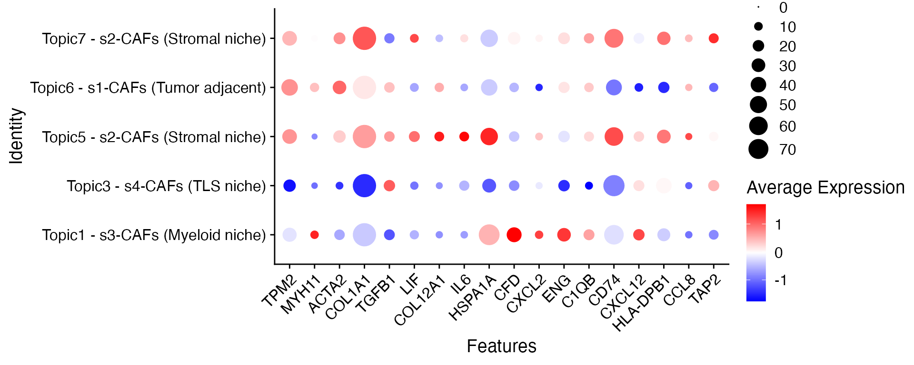

Introduction
Recent advancements in multiplexed tissue imaging allow for examination of tissue microenvironments in great detail. These cutting-edge technologies offer invaluable insights into cellular heterogeneity and spatial architectures, playing a crucial role in decoding mechanisms of treatment response and disease progression. However, gaining a deep understanding of complex spatial patterns remains challenging.
We present SpaTopic, which implements a novel spatial
topic model to integrate both cell type and
spatial information to identify the complex spatial
tissue structures without human intervention. The method was originally
developed for image segmentation in computer vision, incorporating
spatial information into the flexible design of regions (image
partitions, analogous to documents in language modeling). We further
adapted and refined the approach to address unique challenges in
cellular images and provide an efficient C++ implementation of the
algorithm in this R package.
Contrasting to computationally intensive K-nearest-neighbor-based
cell neighborhood analysis approaches (such as KNN-kmeans, the default
neighborhood analysis in Seurat v5 R package), SpaTopic is
more scalable to large-scale image datasets without extracting
neighborhood information for every single cell.
SpaTopic can be applied either on a
single image or across multiple
images.
Set-up
We use a non-small cell lung cancer image to illustrate how to use
SpaTopic. The data object here can be download from here,
with original public resources available on the nanostring
website. These images were generated using a 960-plex CoxMx RNA
panel on the Nanostring CoxMx Spatial Molecular Imager platform. We
selected Lung5-1 sample and annotated cells using Azimuth based on the
human lung reference v1.0. The Lung5-1 sample contains 38 annotated cell
types. Since we used healthy lung tissue as the reference, tumor cells
were labeled as ’basal’ cells. Here we mainly followed the cell
annoration step from Satija Lab, with more information can be found here.
## We use Seurat v5 package to visualize the results.
## If you still use Seurat v4, you will have the error
library(Seurat, quietly = TRUE);packageVersion("Seurat")
#> [1] '5.3.0'
## Load the Seurat object for the image
load("~/Documents/Research/github/SpaTopic_data/nanostring_example.rdata")
## for large dataset
options(future.globals.maxSize = 1e9)We can use the Seurat function ImageDimPlot to visualize
the distribution of cell types on the image.
library(ggplot2)
celltype.plot <-ImageDimPlot(nano.obj, fov = "lung5.rep1", axes = TRUE, cols = "glasbey",dark.background = T)
celltype.plot+theme(legend.position = "bottom",legend.direction = "vertical")Topic Inference on a Single Image
Now, our data is ready. Below we show an example how to use
SpaTopic to identify tissue architectures from multiplexed
images.
Input
The required input of SpaTopic is a data frame containing cells within on a single image or a list of data frames for multiple images. Each data frame consists of four columns: The image ID, X, Y cell coordinates, and cell type.
You may use the function Seurat5obj_to_SpaTopic() to
extract input data from a typical Seurat v5 object. The column name for
cell type information need to be provided via option
group.by.
library(SpaTopic);packageVersion("SpaTopic")
#> [1] '1.2.0.9000'
library(sf)
## Prepare input from Seurat Object
dataset<-Seurat5obj_to_SpaTopic(object = nano.obj, group.by = "predicted.annotation.l1",image = "image1")
head(dataset)
#> image X Y type
#> 1_1 image1 4215.889 158847.7 Dendritic
#> 2_1 image1 6092.889 158834.7 Macrophage
#> 3_1 image1 7214.889 158843.7 Neuroendocrine
#> 4_1 image1 7418.889 158813.7 Macrophage
#> 5_1 image1 7446.889 158845.7 Macrophage
#> 6_1 image1 3254.889 158838.7 CD4 TGibbs Sampling
This step takes around 60~90 seconds on a regular laptop
Important Notes for Parameter Selection:
When running SpaTopic, both sigma and
region_radius should be set based on image resolution and
tissue complexity:
For whole-slide imaging applications, select
region_radiusto include at least 100 cells per region on average. Note that different imaging platforms may report spatial coordinates in either pixels or microns, so adjust parameters accordingly.The
sigmaparameter should be tuned in conjunction withregion_radius. Empirically, we’ve found that settingsigmato approximately the square root ofregion_radiusworks well as a starting point for parameter tuning.
## Gibbs sampling for SpaTopic
system.time(gibbs.res<-SpaTopic_inference(dataset, ntopics = 7, sigma = 50, region_radius = 400))
#> [15:48:55] [SpaTopic INFO] Number of cells per image: 100149
#> [15:48:55] [SpaTopic INFO] Start initialization...
#> [15:48:55] [SpaTopic INFO] Number of Initializations: 10
#> [15:49:14] [SpaTopic RESULT] Min perplexity during initialization: 11.6302
#> [15:49:14] [SpaTopic INFO] Number of region centers selected: 971
#> [15:49:14] [SpaTopic INFO] Average number of cells per region: 103.14
#> [15:49:14] [SpaTopic PROGRESS] Initialization complete. Starting Gibbs sampling...
#> [15:49:50] [SpaTopic COMPLETE] Gibbs sampling completed successfully
#> [15:49:50] [SpaTopic RESULT] Final model perplexity: 11.3156
#> user system elapsed
#> 54.815 0.057 54.936Print the result
print(gibbs.res)
#> SpaTopic Results
#> ----------------
#> Number of topics: 7
#> Perplexity: 11.31563
#>
#> Topic Content(Topic distribution across cell types):
#> topic1 topic2 topic3 topic4
#> Alveolar Epithelial Type 1 0.035870295 6.511503e-03 4.541367e-06 0.026643327
#> Alveolar Epithelial Type 2 0.025386476 3.553900e-02 4.541367e-06 0.017427665
#> Artery 0.007545591 2.624548e-06 9.128148e-04 0.001856373
#> B 0.018581190 5.800251e-04 3.446035e-01 0.015203195
#> Basal 0.025846292 7.753466e-01 1.730261e-03 0.089193312
#> topic5 topic6 topic7
#> Alveolar Epithelial Type 1 2.987411e-06 6.348481e-06 0.005341969
#> Alveolar Epithelial Type 2 2.987411e-06 6.348481e-06 0.006994451
#> Artery 5.320579e-03 2.044846e-02 0.006041096
#> B 1.912242e-02 3.434528e-03 0.018434717
#> Basal 4.902342e-03 6.348481e-06 0.006549552
#> ...
#>
#> Use $Z.trace for posterior probabilities of topic assignments for each cell
#> Use $cell_topics for final topic assignments for each cell
#> Use $parameters for accessing model parametersTopic Content and Distribution
SpaTopic identify seven topics from the image. Below we use the heatmap to show the cell type composition within each topic.
library(pheatmap)
m <- as.data.frame(gibbs.res$Beta)
pheatmap::pheatmap(t(m))We assign each cell to a topic with the highest posterior probability and visualize the distribution of cell topics over the image.
## you can can access the posterior probabilities of topic assignments for each cell
prob<-as.matrix(gibbs.res$Z.trace)
nano.obj$Topic<-as.factor(apply(prob,1,which.max))
## In the new version of SpaTopic, the final topic assignments is in cell topics.
nano.obj$Topic <- as.factor(gibbs.res$cell_topics)
library(ggplot2)
palatte<- c("#0000FFFF","#FF0000FF","#00FF00FF","#009FFFFF","#ff00b7fa","#005300FF","#FFD300FF")
ImageDimPlot(nano.obj, fov = "lung5.rep1", group.by = "Topic", axes = TRUE,
dark.background = T,cols = palatte) + ggtitle("Topic") Compare to BuildNicheAssay() in Seurat v5
We compare SpaTopic to the function
BuildNicheAssay() in Seurat v5. It took around 5 min on the
same laptop.
### NOT RUN!! We use the pre-computed result
system.time(nano.obj <- BuildNicheAssay(object = nano.obj, "lung5.rep1", group.by = "predicted.annotation.l1",
niches.k = 7, neighbors.k = 100))We also visualize the distribution of seven niches over the same image.
nano.obj$niches<-factor(nano.obj$niches)
nano.obj$niches<-ordered(nano.obj$niches,levels = c(1,2,3,4,5,6,7))
## try to match the colors of topics
palatte2<- c("#FF00B6FF","#0000FFFF","#FFD300FF","#009FFFFF","#FF0000FF","#005300FF","#00FF00FF")
ImageDimPlot(nano.obj, fov = "lung5.rep1", group.by = "niches", axes = TRUE, dark.background = T,cols = palatte2) + ggtitle("Niches") Visualizing Topic Probability Distributions
After running SpaTopic, users can visualize not just the discrete topic assignments but also the probability distribution of each topic across the tissue.
Here’s how to create these visualizations:
# Extract topic probabilities for each cell and add as metadata to the Seurat object
topic_prob <- as.matrix(gibbs.res$Z.trace)
for(i in 1:ncol(topic_prob)) {
nano.obj[[paste0("Topic", i, "_probability")]] <- topic_prob[,i]
}
# Function to create a topic probability plot
plot_topic_prob <- function(topic_num) {
feature_name <- paste0("Topic", topic_num, "_probability")
ImageFeaturePlot(nano.obj,
fov = "lung5.rep1",
features = feature_name,
axes = FALSE,
dark.background = FALSE,
cols = viridis::magma(100)) +
ggtitle(paste0("Topic ", topic_num)) +
theme(
legend.position = "right",
plot.title = element_text(size = 10),
plot.margin = margin(1, 1, 1, 1, "pt") # Reduce margins (top, right, bottom, left)
)
}
# Create plots for each topic
topic_plots <- lapply(1:ncol(topic_prob), plot_topic_prob)
# Combine into a multi-panel figure
library(patchwork)
wrap_plots(topic_plots, ncol = 2) &
plot_layout(guides = "collect") 
CAF spatial subtypes across different topics
Inspured by Liu et al 2025, SpaTopic can also help to identify CAF spatial subtypes. Specifically:
- Topic 6 is associated with s1-CAFs adjacent to the tumor;
- Topics 5 and 7 correspond to s2-CAFs within the stromal niche;
- Topic 1 is linked to s3-CAFs in the myeloid niche;
- and Topic 3, primarily comprising B cells and CD4 T cells along with some myofibroblasts, corresponds to s4-CAFs in the TLS niche.
DefaultAssay(nano.obj) <- "Nanostring"
Idents(nano.obj)<-"predicted.annotation.l1"
## gene list from [Liu et al 2025]
caf_genes <- c("TPM2", "MYH11", "ACTA2", "COL1A1", "TGFB1", "LIF",
"COL12A1", "IL6", "HSPA1A", "CFD", "CXCL2", "ENG",
"C1QB", "CD74", "CXCL12", "HLA-DPB1", "CCL8", "TAP2")
### we only look at CAF
myofibro_obj <- subset(nano.obj, predicted.annotation.l1 %in% c("Myofibroblast"))
selected_topics <- c("1", "3", "5", "6", "7")
myofibro_filtered <- subset(myofibro_obj, Topic %in% selected_topics)
custom_topic_labels <- c(
"6" = "Topic6 - s1-CAFs (Tumor adjacent)",
"7" = "Topic7 - s2-CAFs (Stromal niche)",
"5" = "Topic5 - s2-CAFs (Stromal niche)",
"1" = "Topic1 - s3-CAFs (Myeloid niche)",
"3" = "Topic3 - s4-CAFs (TLS niche)"
)
library(ggplot2)
red_blue_colors <- colorRampPalette(c("blue", "white", "red"))(100)
DotPlot(myofibro_filtered, features = caf_genes, group.by = "Topic") +
scale_y_discrete(labels = custom_topic_labels) +
scale_color_gradientn(colors = red_blue_colors) +
RotatedAxis()+ scale_size_continuous(
range = c(0, 8), # Min and max dot size
breaks = c(0, 10, 20, 30, 40, 50, 60, 70), # Custom breaks
limits = c(0, 100) # Set limits to ensure all breaks are included
) 
Though CAF in stroma niche generally have common gene expression profile, there are some CAF genes that are differentially expressed between Topic 5 and Topic 7, such as TGFB1, HSP1A1, COL12A1 genes, potentially due to different immune-enriched neighborhood in the stroma region.
Topic Inference on Multiple Images
SpaTopic can identify common tissue patterns across multiple images. The input should be a list of data frames. See an example below (not run).
## tissue1, tissue2 are data frames of two different images.
gibbs.res<-SpaTopic_inference(list(A = tissue1, B = tissue2), ntopics = 7, sigma = 50, region_radius = 400) Please check more examples in SpaTopic Home Page.